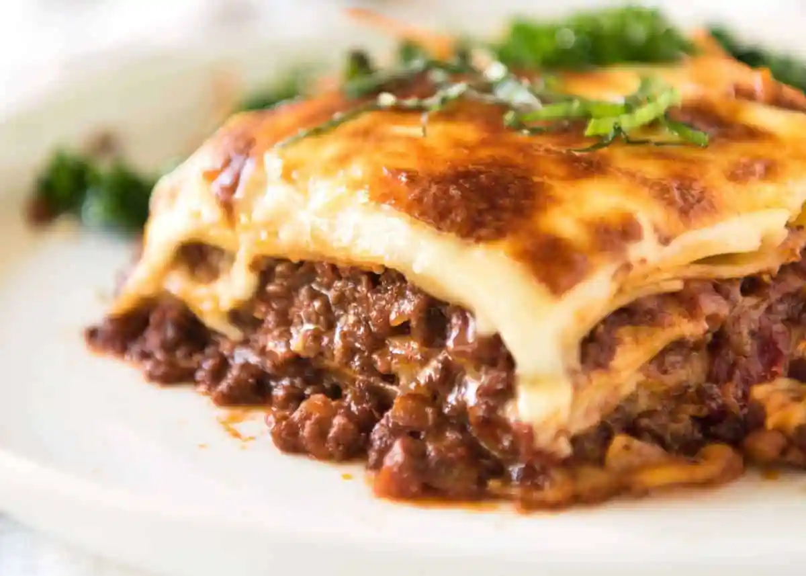

Lasagne

Lasagne is one of the most well-known Italian dishes in the modern era. A simple but tasty dish, it originated in Naples in the 13th century, before becoming popularised in the 15th century by the medieval cookbook Liber de Coquina. Nowadays, its recipe is more concrete, however one can always experiment with the expansive dish.
Ingredients
Casserole
- 500g beef mince
- 1 onion peeled and diced
- 3 cloves garlic, minced
- 400g can chopped tomatoes
- 2 tbsp tomato puree
- Thyme
- 200ml beef stock
- 100ml red wine
Cheese Sauce
- 50g butter
- 50g plain flour
- 300ml milk
- 300ml double cream
- 12 lasagne sheets
- 200g grated cheddar cheese
- 2 balls mozzarella
Method
- Fry the beef, onion, garlic and thyme until browned.
- Top with stock, wine and tomatoes and gently bubble for 30 minutes.
- Melt the butter in a pan, whisk in the flour and cook out for 2 minutes.
- Add the milk cream and ½ the grated cheese and whisk simmer until bubbling.
- Place 1/3 of all the meat into the bottom of a large oven proof dish.
- Top with lasagne.
- Repeat twice more.
- Pour the rest of the sauce over the top.
- Add cheese & mozzarella and bake for 20 mins.